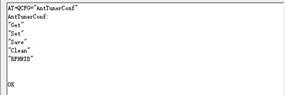

README¶
展锐的一些特性,例如pac包制作,编译等
docs¶
NO. |
文件名称 |
摘要 |
|---|---|---|
0001 |
展锐工厂包打包 |
|
0002 |
展锐安全启动流程 |
|
0003 |
展锐编译报错 |
|
0004 |
展锐裸板下载 |
|
0005 |
展锐裸板下载演示 |
|
0006 |
展锐Ylog使用说明 |
|
0007 |
展锐cpu频率配置 |
|
0008 |
展锐下载失败 |
展锐代码版本号¶
W:\ssdCode\uis8581e_a12_1\idh.code\vendor\sprd\release\IDH\CUS_Release_Notes\AP\CUS_releasenote.xlsx

CM4
cm4 是展锐BB内部的一个低功耗arm处理器,用cm4 配套的IIC 和gpio来控制 小的sensor,可以降低功耗
CP0
4G modem 相关
CP2
看说明文档修改记录,BT wifi相关
GNSS
gps相关
展锐单独编译¶

展锐特点¶
擦除spl分区, 自动进入展锐下载模式
uboot的log,自动打印到uboot_log分区
uboot符号表,bsp/out/androids/uis8581e_5h10_Natv/obj/u-boot15/u-boot
编译流程,原生的展锐编译流程,不适用pax
make
cp_sign
make otapackage
makepac
进入展锐下载流程¶
adb reboot autodloader
fastboot oem autodloader